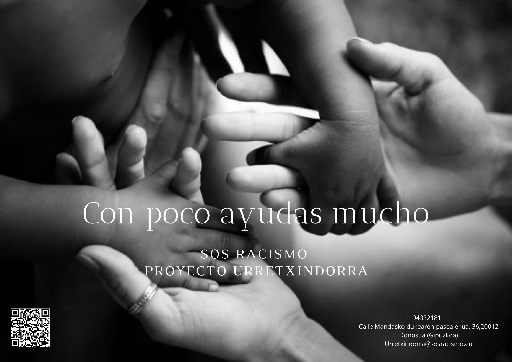

En este apartado de la página web, podremos ver algunos de los trabajos realizados teniendo en cuenta el grado que estudio: comunicación+TCAM
TRABAJOS REALIZADOS
El primer trabajo realizado teniendo en cuenta mis estudios es hacer un cartel publicitario para la organización SOS Racismo

El segundo trabajo fue de nuestra experiencia trabajando con SOS Racismo, en este caso hicimos un video
Por otra parte, le hicimos una entrevista a la directora de Aspegi. Está entrevista se realizo en uno de los sets de radio que nos deja la Universidad de Deusto
Otro de los trabajos realizados fue un One Pager, este trabajo es un documental sobre los raperos que podemos encontrar en España. Este trabajo es ficticio